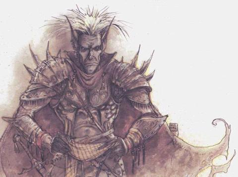
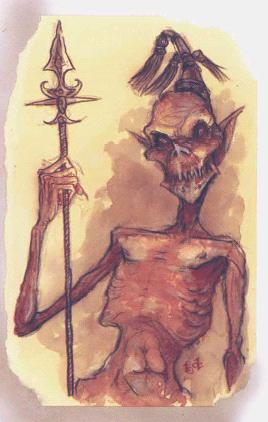

После встречи с молидеем РС свободны отправиться на поиски корабля. Если они позволили Виллуму высказать желание найти корабль, то не будет иметь значения, куда они пойдут или что будут делать – в конечном счете они его найдут. Если партия спрашивает о нем у молидея, то они вероятнее всего немедленно отправятся к озеру расплавленного железа, так как молидей сказал, что видел корабль там. Фактически, корабль все еще набирает команду в городе Раазорфордж (смотрите карту Мастера). Отряду не составит труда обнаружить город и поймать корабль до того, как он улетит.
Если персонажи не загадывают желание и не спрашивают молидея о корабле, они должны наткнуться на него или найти некий ключ к его местонахождению у какого-нибудь обитателя плана. Предполагается, что корабль проводит три или четыре дня в Раазорфордже, а затем перемещается против часовой стрелки по карте, посещая каждую из цитаделей, городов и руин, и делая остановку в каждом месте, по крайней мере на несколько часов (остановки никогда не превышают одного дня), прежде чем перейти через канал ближе к вершине карты. Судно покрывает приблизительно 24 гексагона в день и заканчивает кругооборот по карте через десять дней.
Длина корабля достигает приблизительно 300 футов и он смутно виден на расстоянии 20 миль. Он также оставляет за собой след из мертвых ларв. Во время движения по карте корабль сбрасывает увядшие оболочки ларв почти каждую милю или около того (по три ларвы на гексагон). Увядшие ларвы представляют собой черные оболочки, длиной около 4 футов. Они распадаются в прах при малейшем прикосновении. Персонажи, которые исследуют шелуху без прикосновения к ней, могут определить особенности гуманоидного лица ларвы (заклинание разговора с мертвыми (speak with dead) бесполезно в этом случае; как только ларва умирает, она полностью уничтожается). Большая часть танар’ри, которые встречаются с персонажами, могут быть подкуплены или вынуждены рассказать героям о том, что им известно о корабле (очень немногое, если он не проходил здесь недавно); взятка в размере 500 gp или внушительная демонстрация силы способны извлечь информацию из танар’ри. Интеллектуальные не-танар’ри ненамного более разговорчивы; более подробно это описано на следующих страницах в разделах, повествующих об индивидуальных столкновениях.
Примечание Мастера: Встреча с молидеем – единственное заданное столкновение в этой главе. Остальные материалы в этой главе описывают различные достопримечательности, продемонстрированные на карте Мастера, и предназначены для использования случайных столкновений, чтобы сохранить динамичность приключения, пока герои ищут корабль. Столкновения описаны в таком же порядке, как они изображены на карте.
Если
персонажи
получают
направление
от молидея
прямо к озеру
расплавленного
железа,
и выходят
прямо к
Раазорфорджу,
то они должны
будут
пережить
только два
или три
случайных
столкновения.
Если, вместо
этого, они
блуждают по
плану, то их
ожидает
приблизительно
одно
столкновение
в день.
Пустоши
Эти открытые пространства содержат только красную пыль, редкие скалы и стебли остролистника. Персонажи могут принять участие в любом из последующих столкновений, пересекая пустоши.
Орды
блуждающих
танар’ри:
От двух до
четырех
тысяч
наименьших и
младших
танар’ри,
возглавляемых
камбионом,
суккубом или
вроком, вышли
из Кровавой
Войны и
теперь
скитаются по
данному
плану. Орда
поднимает
высокое
облако пыли,
которое
может быть
замечено,
по меньшей
мере, с
расстояния 15
миль. Герои
легко могут
избежать
встречи с
ордой, но если
они
настолько
глупы, чтобы к
ней
приблизиться,
танар’ри
будут
нападать на
них всей
своей массой,
пока
персонажи не
убегут или не
погибнут (орда
может
появляться
на пути
героев
всякий раз,
когда они
идут туда,
куда не хочет
Мастер).
Чазмы-разведчики:
1d3
чазма
пролетают
мимо,
выискивая
покинувших
Кровавую
Войну
демонов. Если
герои
атакуют их, то
чазмы
вступают в
бой,
используя
свое усыпляющее
жужжание.
Если
персонажи
игнорируют
их, чазмы
подлетают на
100 ярдов, парят
над их
головами в
течении 1d4+1
раундов, и
используют
свое усыпляющее
жужжание. К
концу этого
времени они
могут
напасть на
группу (40%),
улететь
прочь (40%) или же телепортироваться
и вернуться
через 1d4
часов еще с
тремя
чазмами и 2d4
глазокрылами.
Чазме и
их союзники
атакуют, если
герои не
откупаются
от них
магическим
предметом.
Чазмы (1d3): THACO 13; #AT 3; Dmg 2d4/2d4/ld4; AC -5; HD 8+2; hp 38; MV 6, Fl 24(D); SA ранение, усыпляющее жужжание, ужас; MR 50%; SZ Средний (7 футов длины); Int Средний-Очень Интеллектуальные; AL Хаотично-Злое; ML 15-16; XP 14,000.
Заклинательные
способности (8ой
уровень):
Всегда
активные: определение
добра (detect good),
определение
невидимости
(detect invisibility); Раз в
раунд: туча
насекомых (insect plague),
луч
ослабления (ray of
enfeeble-ment), теликинез
(telekinesis).
Врата
(три раза в
день): 2dl0
мэйнов, ld4+l камбионов
или 1 чазм (40%).
Глазокрылы
(2d4):
AC42; MV
Fl 24 (B);
HD 3; THAC0
17; #AT 3
или 1; Dmg
1d6/1d6/1d4
или слезы; SA
слезы; SD
идеальное
зрение на
расстоянии
до 25 миль,
инфравидение
до 120 футов; SZ
Большой (размах
крылеьв 15
футов); ML
12 (Учтойчивая); Int
Низкий (5); AL
Законно-Злое; XP
650
Буйствующие
арманиты:
Набор из 1d4+4
арманитов
нападает на
героев. Они
потеряли
свой кнект и
будут
атаковать до
тех пор, пока
их не
уничтожат,
или пока
герои не
найдут
способ
сбежать. Если
персонажи
атакуют
арманитов по
мере их
приближения,
то половина
из них
останавливается
и стреляет из
луков и
арбалетов по
партии, пока
остальные
приближаются
для того,
чтобы
вступить в
ближний бой.
Как только
начинается
ближний бой,
арманиты-стрелки
бросают свои
луки и
арбалеты,
чтобы
присоединиться
к товарищам.
Арманиты (1d4+4):
THACO 15; #AT
3; Dmg 2d6/2d6 (копыта)/
1d10 (фламберг)
или ld8+l
(стрелы); AC
2; HD 5; hp
23; MV 18, Fl
18 (C); SA
искрящиеся
болты,
дробящие
копыта; SD
могут быть
ранены
только
оружием +2 или
с лучшим
уровнем
зачарования,
обладают
иммунитетом
к яду, холоду
и
электричеству;
SZ
Большой (10
футов высоты);
Int
Средний; AL
Хаотично-Злое;
ML
Нет; XP
2,000.
Гигантские муравьи: Герои натыкаются на гнездо 1d100 гигантских красных муравьев, которые выскакивают из пыльной земли. Эти муравьи более жестоки, чем их сородичи с Основного Материального Плана, но это вполне естественно. Они полагаются на свою многочисленность и явную свирепость, которые необходимы им для того, чтобы выжить в Бездне. Они бесстрашно атакуют, пока половину из них не убьют или же герои не воспользуются огнем. Их трудно обнаружить, пока они скрываются в красной пыли, и потому герои получают отрицательный бросок -3 к броскам ошарашивания.
Гигантские
муравьи
(1d100):
THACO 17; #AT
1; Dmg 2d4;
AC 3; HD
3; hp 10; MV
18; SA
успешный
удар дает
возможность
совершить
укус, нанося 3d4 единиц
урона, спас-бросок
против яда
уменьшает
урон до ld4
пунктов; SZ
Маленький (3
фута длины); Int
Нет; AL
Нейтральное; ML
Нет; XP
420.
Ле
Танар’ри
вырастили
рощу змеиных
деревьев,
чтобы
защитить
портал в
Сигил в
руинах (смотрите
Приложение
Монстров в
наборе Планы
Хаоса).
Деревья
исключительно
агрессивны и
нападают на
все, что
оказывается
в пределах
досягаемости,
кроме танар’ри
человеческого
или большего
размера.
Когда герои
входят в
гексагон
леса, они
натыкаются
на 1d3 змеиных
дерева и
должны будут
сразиться с
ними. Если
персонажи
убегают, то
каждое
дерево
отламывает 1d4 ветки,
которые
преследуют
их. Если
героям
известно о
деревьях, то
бросок
навыка
Бдительности,
заклинание обнаружения
невидимости
(detect invisibility) или
успешный
бросок
Интеллекта
позволят им
обнаружить
опасные
деревья и
избежать их.
Однако
проявление
такого
внимания к
деревьям
дает 90%
вероятность
того, что
герои
заблудятся и
будут ходить
по лесу
кругами; эта
вероятность
уменьшается
до 50%, если
партия имеет
гида-арманита.
Змеиные
Деревья (1d3):
THACO 13; #AT
7; Dmg 2d6;
AC 7; HD
7; hp 30; MV
0; SA яд,
отделяющиеся
ветви; SD
иммунитет к
холоду, яду,
кислоте и
заклинаниям,
которые
воздействуют
на одно
сушество,
половинный
урон от
дробящего
оружия,
двойной урон
от огня; SZ Огромный (30
футов высоты);
Int
Полуинтеллектуальные;
AL Хаотично-Злое;
ML 12; XP
5,000.
Руины
Эти области, включая и ту, которая содержит портал, через который герои попали на этот план, являются останками прежнего Чумного Кладбища. Периодически привратный город выталкивается за границы Внешних Земель в Бездну, когда достаточное количество обитателей города выпускает на свободу злые и мятежные стороны своих душ. На протяжении столетий, множество городов опустилось в Бездну (Если герои отправятся вдоль руин, то они, в конечном счете, найдут Разоренный Предел и его портал, ведущий на Внешние Земли). Перемещенное Чумное Кладбище продолжает жить какое-то время, но, в конечном счете, и оно приходит в запустение. Предприимчивые планары эмигрируют в другие места, где лорды танар’ри более тверды и суровы, и первоначальный город постепенно пустеет. В конце концов, орда танар’ри вторгается в город и забирает все ценное.
Если РС посещают руины, то они могут столкнуться со следующими существами.
Мейны:
5d10
этих существ
с шумом
убирают
мусор. Герои
могут
обвести их
вокруг
пальца, если
будут
достаточно
быстрыми, но
мэйны
нападают,
если заметят
партию. Герои
не могут
связаться с
ними даже
используя
магию.
Мейны (5d10): THACO
20; #AT 3; Dmg ld2/ld2/ld4;
AC 8; HD 1; hp
4; MV 6; SA
кислотный
пар; MR
10%; SZ
Маленький (3
фута высоты); Int
Полуинтеллектуальные;
AL
Хаотично-Злое;
ML n/a;
XP 975.
Арманиты:
2d10
арманитов
ищут место,
чтобы
основать
новый город.
Они нападают
при малейшей
провокации,
но с
удовольствием
возьмут
немного
денег в обмен
на
информацию.
Арманиты (2d10):
THACO 15; #AT
3; Dmg 2d6/2d6 (копыта)/
1d10 (фламберг)
или ld8+l
(стрелы); AC
2; HD 5; hp
23; MV 18, Fl
18 (C); SA
искрящиеся
болты,
дробящие
копыта; SD
могут быть
ранены
только
оружием +2 или
с лучшим
уровнем
зачарования,
обладают
иммунитетом
к яду, холоду
и
электричеству;
SZ
Большой (10
футов высоты);
Int
Средний; AL
Хаотично-Злое;
ML
Нет; XP
2,000.
Черепные
Крысы:
40 черепных
крыс
привлечены
провизией
героев. Их
достаточно
чтобы
наложить два
заклинания фантасмагории
(описанных
для игроков
ниже). Так как
иллюзии
усиливаются
в Бездне,
эффекты
фантасмагории
имеют и
звуковой
компонент.
Вы
вступаете в
область
запутанных
руин, густо
заросших
остролистником
и покрытых
ковром
красной пыли
с окружающих
пустошей.
Пыль
приглушает
ваши шаги, и
вы могли бы
столь же
тихими, как и
бесплотные
духи, если бы
не бренчание
вашего
оружия и
снаряжения.
Когда вы
делаете
очередной
шаг, тихий
стон
раздается из
праха,
лежащего у
ваших ног.
Вскоре после
этого, прежде
чем вы
успеваете
что-либо
сделать,
перед вами
появляется
закутанная
фигура,
примерно
человеческого
размера, но,
кажется,
лишенная ног.
Её щуплое
лицо бледно и
покрыто
похожей на
пергамент
кожей,
натянутой
так сильно,
что голова
этого
существа
очень
напоминает
голый череп.
Существо
сжимает
деревянную
чашу для
подаяний в
своих
похожих на
когти руках.
Издавая еще
один молящий
стон, оно
протягивает
чашу вам.
Крысы надеются, что партия даст им немного продовольствия. Иллюзия не может говорить, но она может стонать и двигаться, чтобы преградить дорогу персонажу, который ничего не дал. Если несколько персонажей проходят мимо иллюзии, то появляется второй просящий фантом.
Все, что герои кладут в чашу, исчезает. Жидкости испаряются. Твердые вещи, вроде монет звякают о дно чаши, но затем исчезают. Продовольствие также исчезает, но герои могут «заполнить» чашу, если будут складывать туда пишу достаточно быстро. Вещи на самом деле падают на землю, тихо приземляясь в пыль. Если герои внимательно разглядывают землю, то они заметят лежащие на ней вещи и обретут веские основания для того, чтобы не поверить в иллюзию.
Крысы позволяют персонажам беспрепятственно миновать их, если они отдают, по крайней мере, двухнедельный рацион. В противном случае они атакуют.
Черепные
крысы (40):
THACO 19; Dmg
ld4; AC
6; HD 1; hp
3; MV
15; SA
заклинания; SD
общий разум; SZ
Крошечные (6
футов длины); Int
Низкий; AL
Нейтрально-Злое;
ML 7; XP
65.
Авантюристы:
Группа
Невежд,
охотящихся
за
сокровищами,
потеряла всю
свою еду у
черепных
крыс. Они
обнаружили
иллюзию и
рассеяли
стаю, но крысы
возвратились
во время
привала и
украли все их
продовольствие.
Авантюристы
отчаялись и
теперь
голодают. За
недельный
рацион они
заплатят 500 gp
или дадут
зелья (у них
есть 2,000 gp и
несколько
зелий,
перечисленных
ниже). Если
персонажи
отказываются
торговаться,
авантюристы
нападают на
них.
Бойцы (6*):THACO 13; #AT 3/2 или 2/1; Dmg В зависимости от оружия; AC 4; HD 6**; hp 48; MV 9; SA Положительные модификаторы за Силу и специализацию определяются Мастером; SZ Средний; Int Средний; AL Различное; ML 12; XP 1,400 за каждого.
Снаряжение: Бахтерец, щит, длинный меч +1, длинный лук, 20 комплектов стрел, кинжал, по два зелья из перечислены ниже у каждого бойца: чтения мыслей, экстра-лечения (x2), огненного дыхания, полета, газообразной формы, лечения (x2), невидимости, масло скользкости, скорости, обнаружения сокровищ, контроля нежити (призрак).
Жрец: THACO 16; Dmg в зависимости от оружия; AC 4; HD 9**; hp 45; MV 9; SA Заклинания произносятся на 7-ом уровне; SZ Средний; Int Средний; AL Хаотично-Нейтральное; ML 12; XP 2,000.
Снаряжение:
Banded
mail,
щит +1, булава
разрушения,
зелье экстра-лечения
(potion
of
extra-healing),
зелье
сопротивления
огню (potion of fire resistance).
Запомненные
заклинания:
1й-уровень:
лечение
легких ранений
(cure light wounds); 2й-уровень:
помощь
(aid), предсказание
(augury); 3й-уровень:
нейтрализация
яда
(neutralize poison), исцеление
болезнь (cure disease); 4й-уровень:
лечение
серьезных
ранений
(cure serious wounds).
Маг: THACO 18; Dmg в зависимости от оружия; AC 4; HD 9**; hp 27; MV 9; SA Положительные модификаторы за Силу и специализацию определяются Мастером; SZ Средний; Int Высокий; AL Хаотично-Нейтральное; ML 12; XP 2,000.
Снаряжение: кинжал +2, палочка страха (19 зарядов), палочка чуда (41 заряд), зелье чревовещания.
Запомненные
заклинания:
1й-уровень: магический
снаряд (magic
missile)
(x2),
очарование
человека (charm person);
2й-уровень: луч
ослабления (ray
of
enfeeblement), вонючее
облако (stinking
cloud);
3й-уровень: огненный
шар (fireball),
замедление (slow);
4й-уровень: пространственная
дверь (dimension door),
улучшенная
невидимость (improved
invisibility); 5й-уровень:
стена
железа (wall
of iron).
Цитадели
Могущественные
лорды танар’ри
владеют
этими
огромными
железными
крепостями.
Некоторые из
них – это
просто умные
демоны,
которым
удалось
завоевать
личные
домены в
междоусобном
хаосе
Равнины
Бесконечных
Порталов.
Другие лорды (обычно
налфешни,
марилиты и
балоры) в
действительности
служат на
Кровавой
Войне, следя
за
вторжениями
баатезу и
других
противников,
которые
могли бы
попробовать
захватить
власть над
озерами
расплавленного
железа.
Сейчас все
лорды
особенно
бдительны,
так как
поблизости
находится
корабль
хаоса. Они
могут
увидеть в
любом
незнакомце
или агента
баатезу или
просто
другого
странствующего
врага.
Каждому лорду служит элитный отряд, состоящий приблизительно из дюжины более слабых истинных танар’ри (вроков, глабрезу и хезроу), элитная охрана из нескольких дюжин старших танар’ри и несколькими сотнями наименьших и младших танар’ри. Мудрые знатоки будут держаться подальше от цитаделей.
Если
герои
приближаются
к цитадели, им
навстречу
выходит
патруль,
который
встречает их.
Типичный
патруль
состоит из
врока-лидера,
сопровождаемого
семью или
восемью алу-демонами
и камбионами
– патруль
всегда
превосходит
численностью
героев. Врок
требует, что
персонажи
открыли им
свои
намерения.
Обычно врок
прогоняет
персонажей и,
чаще всего,
нападает,
если они не
предложат
ему
существенной
взятки. Если
вспыхивает
сражение, то в
течение
каждого
раунда
прибывает
одно или два
подкрепления
танар’ри (телепортируясь
к месту битвы
из цитадели),
пока герои не
убегут или не
умрут.
Алу-демон: THACO 19; Dmg ld8+l (длинный меч +1); AC 0 (пластинчатые доспехи +1); HD 2; hp 9; MV 12, Fl 15(D); SA восстановление хит-поинтов; SD уязвимы только для магического или холодного железа оружия, чувство опасности 75%; MR 30%; SZ Средний (6 футов высоты); Int Средний; AL Хаотично-Злое; ML 11; XP 4,000.
Заклинательные
способности (2й
уровень):
Раз в раунд:
очарование
человека (charm person), чтение
мыслей,
изменение
облика (shape
change),
совет (suggestion);
Раз в день: пространственная
дверь (dimension door).
Камбион:
THACO 17; #AT
2; Dmg
ld8+3 (+2
к броскам
атаки, +3 к
броскам
урона за
магию и
специализацию);
AC 1 (пластинчатый
доспех); HD 9 (F9);
hp 81; MV
12; SA
страх при
прикосновении,
воровские
умения; SD никогда
не может быть
ошарашен; MR
30%; SZ
Средний (6
футов высоты);
Int
Средний; AL
Хаотично-Злое;
ML 13; XP
6,000.
Врок: THACO 13; #AT 5; Dmg ld4/ld4/ld8/ld8/2d4+9 (секач+2); AC -5; HD 8; hp 36; MV 12, Fl 18(C); SA споры, визг, танец краха, первая атака; SD никогда не может быть ошарашен, уязвим только для оружия +2 или с большим уровнем зачарования; MR 70%; SZ Большой (8 футов длины); Int Высокий; AL Хаотично-Злое; ML 17;XP 19,000.
Заклинательные
способности
(10й уровень): Раз
в раунд: обнаружение
невидимости
(detect
invisibility),
обнаружение
магии (detect
magic),
рассеивания
магию (dispel magic),
массовое
очарование ( mass
charm),
зеркальное
подобие (mirror
image),
телекинез (telekinesiss).
Врата
(раз в день):
2dl0
мэйнов, ld6
бар-лгура или
один
налфешни (50%).
Если Мастер хочет разнообразить приключение, хитроумные герои могли бы войти в цитадель, прикинувшись посыльными или торговцами, или предложив свои услуги лорду. Обычно, танар’ри просто заманивают персонажей вовнутрь, где они могут быть съедены, убиты или порабощены (если они не спасаются с помощью магии).
Цитадель,
отмеченная
скрещенными
мечами (на
карте
Мастера) и
упоминавшаяся
ранее,
находится
под осадой
орды мейнов,
раттеркинов,
бар-лгуров и
нескольких
более
могучих
танар’ри.
Даже на
расстоянии
видно, что
нападающие
заполняют
крепость
подобно
сердитым
муравьям,
буквально
разрывая ее
на части. Если
герои
подойдут
ближе, то они
увидят, что
банда сносит
и пожирает
защитников, и,
если они
приблизятся
достаточно
близко, то
персонажи
будут
атакованы
массой и
сожраны.
Города
Эти области представляют собой обширные трущобы, изобилующие дретчами, Безрадостными, тифлингами и разнообразными планарными безумцами, которым хватило ума построить себе дом в Бездне. Отряды бабау и чазмов патрулируют улицы и окружающие равнины, выискивая дезертиров с Кровавой Войны. Где-то в глубинах города находится дворец или крепость, где проживает местный повелитель танар’ри.
РС
могут выжить
в городе, если
они будут
держать свое
мнение при
себе и
следить за
спинами.
Снаряжение и
пища в три или
пять раз
дороже
обычной цены.
Герои могут
тут найти
очень
немного
информации,
так как
местные
жители
выживают
благодаря
тому, что
держат свои
костяные
коробки
закрытыми о
том, что они
видят и
слышат. Они не
знают ничего
о корабле
хаоса,
за
исключением
того, что он
посещал
город и стал
причиной его
разрушение,
так как поле
энтропии корабля
вызвало
огромные
беспорядки.
Если герои
спрашивают
об этих
разрушениях,
то местные
жители
сообщают им,
что корабль
прилетел и
сделал
каждого
жителя
города
безумным. За
минимальное
количество
звенелок,
герои могут
узнать
подробности
о том, когда именно
прибыл корабль,
а так же в
каком
направлении
он отбыл и
когда. Другие
возможные
столкновения
включают в
себя
следующие:
Задира:
Камбион,
привыкший
мучить
жителей
города и
планаров,
насмехается
над героями
или
оскорбляет
их. Кэмбион
вооружен трезубцем
+2 и выглядит
готовым к
битве, но
телепортируется
прочь, если
партия
начинает
брать верх.
Камбион:
THACO 17; #AT
2; Dmg ld8+3 (+2 к
броскам
атаки, +3 к
броскам
урона за
магию и
специализацию);
AC 1 (пластинчатый
доспех); HD
9 (F9); hp
81; MV 12; SA
страх при
прикосновении,
воровские
умения; SD никогда
не может быть
ошарашен; MR
30%; SZ
Средний (6
футов высоты);
Int
Средний; AL
Хаотично-Злое;
ML 13; XP
6,000.
Змеиное
Масло:
Тифлинг,
одетый в
одежду ярких
тонов,
предлагает
героям
всякий хлам,
немного
оружия,
пузырьки с
ядом или
кислотой и
другие
небольшие
вещи. Его
товары
дрянные, но
цены
достаточно
низкие. Он
продолжает
увещевать
персонажей,
пока они не
купят чего-нибудь.
Если герои
уходят,
тифлинг идет
по пятам, все
еще убеждая
их что-нибудь
купить. Если
он не может
ничего
продать, то он
обчищает
карманы
ближайшего
персонажа.
Тифлинг (T9): THACO 16; #AT 2; Dmg ld6+l (короткий меч +1)/ld4+l (кинжал +1); AC 4; HD 9; hp 28; MV 12; SA инфравидение (60 футов), тьма в радиусе 15 футов раз в день, воровство 95%, удар в спину увеличивает урон в четыре раза, другие воровские умения; SD половинный урон от холода, +2 к спас-броском против огня, электричества и яда; SZ Средний (5 футов высоты); Al Хаоитчно-Злое; ML 10; XP 2,000.
Сила
11, Ловкость 18,
Телосложение
11, Интеллект 12,
Мудрость 11,
Харизма 12.
Суккуб:
Девушка с
горящими
глазами
бросается в
ноги героям.
Она отчаянно
хочет
выбраться из
Бездны и
просит
персонажей
взять ее с
собой. Она
гтоова
готовить и
убирать для
них. Она
признает
наличие
незначительных
колдовских
способностей
и готова
исполнять
любые
поручения,
какие дадут
ей герои. На
самом деле
она просто
ищет жертву (смотрите
раздел «Лагерные
последователи»).
Суккуб: THACO 15; #AT 2; Dmg ld3/ld3; AC 0; HD6; hp 27; MV 12, Fl 18(C); SA поцелуй высасывает один энергетический уровень; SD никогда не может быть ошарашена, уязвима только для оружия +2 или с большим уровнем зачарования, иммунитет к любому пламени; MR 30%; SZ Средний (6 футов высоты); Int Выдающийся; AL Хаотично-Злое; ML 13; XP 11,000.
Заклинательные
способности (6й
уровень):
Раз в раунд: стать
эфирной (become
ethereal),
очаровать
человека (charm
person),
яснослышанье,
чтение мысле,
планарный
переход (plane
shift),
измененине
облика (shape
change)
(в
гуманоидную
форму
приблизительно
своего
размера и
веса), совет
(suggestion).
Врата
(раз в день):
один балор (40%).
Отряд
Вербовщиков:
Бабау и
хезроу
находятся в
городе,
собирая
рекрутов на
Кровавую
Войну. Они
решают, что
персонажи
были бы
хорошим
отрядом (они
могли бы
появиться на
сцене, когда
герои
дерутся с
камбионом).
Персонажи
могут
откупиться
за 10,000 gp, но
только в
случае, если
рядом нет
свидетелей.
Если они
дерутся, то
никто не
шевельнет и
пальцем,
чтобы помочь
танар’ри (хотя
они могут
использовать
свои
способности врат).
Танар’ри не
будут
преследовать
героев, если
они сбегут с
помощью
заклинания телепортации
или других
магических
средств.
Бабау: THACO 13; #AT 1 или 3; Dmg ld4+l/ld4+l/2d4 или ldl0+8 (двуручный меч +1); AC -3; HD 8+14; hp 50; MV 15; SA ослабляющий взор, воровские умения; SD кислотное желе, уязвим только для оружия +1 или с большим уровнем зачарования; MR 50%; SZ Средний (7 футов высоты); Int Гениальный; AL Хаотично-Злое; ML 15-16; XP 17,000.
Заклинательные
способности (9й
уровень):
Раз в раунд: рассеивание
магии (dispel
magic), страх (fear),
полет (fly),
нагревание
металла (heat
metal),
левитация (levitate),
самопревращение
(polymorph self).
Врата
(раз в день):
ld6
камбионов
или один
бабау (40%).
Хезроу: THACO 11; #AT 3; Dmg ld6/ld6/4d4; AC -6; HD 11; hp 58; MV 12; SA медвежья хватка зловоние; SD половинній урон от обічніх атак, уязвим только для оружия +2 или с большим уровнем зачарования, никогда не может быть ошарашен; MR 70%; SZ Большой (7 футов высоты); Int Средний; AL Хаотично-Злое; ML 18; XP 14,000.
Заклинательные
способности (9й
уровень):
Раз в раунд: оживление
объекта (animate
object), мигание (Wink),
создание
огня (produce flame),
защита от
обычных
снарядов (protection
from normal
missiles),
вызов
насекомых (summon insects),
порочное
слово (unholy word),
стена огня (wall
of fire); Три
раза в день: двухмерность
(duo dimension).
Врата
(три раза в
день): 4dl0
наименьших, 1d10
младших или ld4
старших
танар’ри (50%);
раз в день:
один
истинный
танар’ри (20%).
Воронки
Воронки – это рваные впадины в земле; их ширина может варьироваться от нескольких ярдов до лиги. Воронки ведут на более глубокие слои Бездны, и у героев нет никаких причин спускаться туда во время этого приключения.
Если
партия
использует
воронку,
результаты
этого
определяются
Мастером. Как
только они
спускаются
туда,
магические
силы
захватывают
персонажей и
несут их
через
переплетения
и спирали в
извилистых
внутренностях
воронки; они
не могут
управлять
своим
передвижением,
пока не
достигнут
другого
конца
воронки.
Бедолаги
могут
оказаться в
ядовитой
грязи,
попасть в
руки
ожидающего
их лорда
Бездны,
вернуться
обратно на
Равнину
Бесконечных
Порталов или
оказаться
где угодно, по
воле Мастера.
Герои не
могут
принимать
участия в
каких-либо
столкновениях
в пределах
воронки (все,
что входит
туда,
немедленно
переносится
на другой
конец), но они
могут иметь
столкновение
с обоих
концов.
Возможности
включают:
Армия:
Тысяча
низших и
меньших
танар’ри во
главе с
хезроу
держит путь
на Кровавую
Войну. Герои
должны
немедленно
убраться с их
пути или же
быть
растоптанными
насмерть.
Если партия
не покидает
данную
область
сразу же
немедленно,
то
командующий
пытается
добавить их в
ряды своей
армии.
Персонажи
могут
избежать
весьма
неприятной
для них
службы,
пожертвовав
немного
наличных,
магических
предметов
или поспешно
сбежать. Если
персонажи
будут
сражаться, то
они будут
разгромлены
и растерзаны
на части.
Хезроу: THACO 11; #AT 3; Dmg ld6/ld6/4d4; AC -6; HD 11; hp 58; MV 12; SA медвежья хватка зловоние; SD половинный урон от обычных атак, уязвим только для оружия +2 или с большим уровнем зачарования, никогда не может быть ошарашен; MR 70%; SZ Большой (7 футов высоты); Int Средний; AL Хаотично-Злое; ML 18; XP 14,000.
Заклинательные
способности (9й
уровень):
Раз в раунд: оживление
объекта (animate
object), мигание (Wink),
создание
огня (produce flame),
защита от
обычных
снарядов (protection
from normal
missiles),
вызов
насекомых (summon insects),
порочное
слово (unholy
word),
стена огня (wall of
fire);
Три раза в
день: двухмерность
(duo
dimension).
Врата
(три раза в
день): 4dl0
наименьших, 1d10
младших или ld4
старших
танар’ри (50%);
раз в день:
один
истинный
танар’ри (20%).
Молидей:
Это существо
внимательно
следит за
воронкой. Он
не позволяет
персонажам
пройти туда,
если у них нет
охранного
свидетельства
от лорда
танар’ри или
достаточного
количества
денег для
взятки.
Молидей: THACO 9; #AT 3; Dmg 2d6/ld6/2dl0+5 (топор); AC -5; HD 12; hp 70; MV 15; SA ворпаловый топор танца (vorpal axe of dancing), яд; SD уязвим только для оружия холодной железной ковки, никогда не может быть ошарашен; MR 90%; SZ Огромный (12 футов высоты); Int Выдающийся; AL Хаотично-Злое; ML 20; XP 21,000.
Заклинательные
способности
(12й уровень):
Всегда
активные: истинное
видение (true
seeing); Один раз
в раунд: воздействие
на
нормальный
огонь (affect
normal
fires),
оживление
объекта (animate
object),
слепота (blindness),
очарование
человека или
млекопитающего
(charm person
or
mammal), команда (command),
черные
щупальца
Эварда (Evard's
black
tentacles) страх (fear),
улучшенная
невидимость (improved invisibility),
определение
мировоззрения
(know
alignment),
превращение (polymorph
other), сон (sleep),
совет (suggestion),
прикосновение
вампира (vampiric
touch);
Семь раз в
день: молния
(lightning bolt).
Врата
(раз в раунд):
ld4
бабау, ld2
чазма или 1
молидей (35%).
Отряд
Вербовщиков:
Бабау и
хезроу
наблюдают за
воронкой с
целью
выявления
дезертиров и
заблудившихся
воинов. Они
видят
нахождение
героев около
воронки
очень
подозрительным,
и предлагают
персонажам
шанс
доказать
свои хорошие
намерения,
став
добровольцами
в Кровавой
Войне. Эта
парочка
может быть
подкуплена.
Бабау: THACO 13; #AT 1 или 3; Dmg ld4+l/ld4+l/2d4 или ldl0+8 (двуручный меч +1); AC -3; HD 8+14; hp 50; MV 15; SA ослабляющий взор, воровские умения; SD кислотное желе, уязвим только для оружия +1 или с большим уровнем зачарования; MR 50%; SZ Средний (7 футов высоты); Int Гениальный; AL Хаотично-Злое; ML 15-16; XP 17,000.
Заклинательные
способности (9й
уровень):
Раз в
раунд: рассеивание
магии (dispel
magic),
страх (fear),
полет (fly),
нагревание
металла (heat
metal),
левитация (levitate),
самопревращение
(polymorph self).
Врата
(раз в день):
ld6
камбионов
или один
бабау (40%).
Хезроу: THACO 11; #AT 3; Dmg ld6/ld6/4d4; AC -6; HD 11; hp 58; MV 12; SA медвежья хватка зловоние; SD половинный урон от обычных атак, уязвим только для оружия +2 или с большим уровнем зачарования, никогда не может быть ошарашен; MR 70%; SZ Большой (7 футов высоты); Int Средний; AL Хаотично-Злое; ML 18; XP 14,000.
Заклинательные
способности (9й
уровень):
Раз в раунд: оживление
объекта (animate
object), мигание (Wink),
создание
огня (produce flame),
защита от
обычных
снарядов (protection
from normal
missiles),
вызов
насекомых (summon insects),
порочное
слово (unholy word),
стена огня (wall
of fire); Три
раза в день: двухмерность
(duo dimension).
Врата
(три раза в
день): 4dl0
наименьших, 1d10
младших или ld4
старших
танар’ри (50%);
раз в день:
один
истинный
танар’ри (20%).
Дыра в Земле: То, что кажется воронкой, на самом деле является огромным кратером. Скала, из которой состоят стены кратера, является ненадежной и легко крошится. Любое существо, которое весит больше домашней кошки, создает незначительную лавину при попытке подняться по стене, и соскальзывает вниз. Скольжение наносит 6dl0 единиц урона от падающих камней (спас-бросок против окаменения уменьшает его в два раза). На дне кратера поселился бебилит, который теперь кормится всем, что в него падает.
Бебилит: THACO
9; #AT 3; Dmg
2d4/2d4/2d6; AC
-5; HD 12; hp
54; MV 9, Wb 18; SA
уничтожение
брони, яд; SD
непрерывная
защита от
добра,
уязвим
только для
оружия +2 или с
большим
уровнем
зачарования,
паутина, планарный
переход (только
Астральный
План); MR
50%; SZ
Огромный (15
футов длины); Int
Очень
Интеллектуальный;
AL
Хаотично-Злое;
ML 16; XP
13,000.
Караванные
Пути
Отмеченные на карте пути, по которым странствуют торговцы, используются ими, когда они перевозят свою продукцию. Герои не находят ничего, что указывало бы на дорогу, если бы не случайные колеи или несколько кусочков металла и железа от разбитого фургона.
Если
герои
пробуют
пройти по
караванному
пути или
проводят
значительное
время около
одного из них,
то они могут
встретить
караван
Аверила.
Аверил (Pl/m/тифлинг/F10,W11/Свободная
Лига/Хаотично-Нейтральный)
бродит по
Равнине
Бесконечных
Порталов со
своей бандой
тифлингов-последователей
и арманитов-телохранителей.
Он везет 20
фургонов с
продуктами в
поселения и
цитадели.
Аверил также
странствует
по берегам
озер
расплавленного
железа,
торгуя
оружием и
железными
слитками.
Аверил
подозрителен
при общении с
персонажами,
но рад видеть,
что они не
бодаки. Он
слишком
осторожен,
чтобы
самостоятельно
начать
разговор, но
будет
говорить с
героями, если
они
поприветствуют
его караван.
Он
представится
как Аверил, «свободный
торговец
роскошного и
мирского».
Мастер может
использовать
Аверила для
того, чтобы
обеспечить
героев любой
необходимой
им
информацией;
персонажи
должны
купить что-нибудь,
чтобы
развязать
его язык (он
слишком горд,
чтобы взять
обычную
взятку).
Озера
Расплавленного
Железа
Озера
в этой части
Равнины
Бесконечных
Порталов
пылают белым
жаром. На их
берегах
очень жарко,
так как
расплавленное
железо
беспрестанно
накатывается
на
обугленные
от высокой
температуры
черные
берега. Жар,
исходящий от
озера, можно
почувствовать
за лигу, и
никакое
существо не
может
пребывать в
пределах 100
ярдов от
жидкого
металла без
защиты от
высокой
температуры (танар’ри
невосприимчивы
к
немагическим
высоким
температурам).
Незащищенные
персонажи
получают 1d10
единиц урона
каждый раунд.
Погружение в
озеро
требует спас-броска
против магии
смерти, и
провал сразу
же убивает
бедолагу.
Даже если
спас-бросок
успешен,
пловец
получает 5d10 единиц
урона в
течение
каждого
раунда. В этом
районе
довольно
небольшая
активность.
Перевозчики железа: Группа из двух дюжин мейнов под руководством глабрезу трудятся на побережье, перенося тигли расплавленного железа, выбрасываемые из водоемов. Дюжина магмовых мефитов находятся в каждом тигле, сохраняя металл горячим. Глабрезу, Г’оуд’нидж, не слишком враждебен, и приветствует партию в дружественной манере, если они не нападают или не бегут. Герои заинтересовали танар’ри, и как только он узнает (с помощью своего истинного видения), что они не являются замаскированными баатезу, он будет стремиться помочь им. Демон с готовностью отвечает на все их вопросы, но он скажет героям правду только в отношении корабля хаоса и Равнины Бесконечных Порталов. Когда герои собираются уйти, он дает им несколько драгоценных камней (их ценность определяет Мастер) и медную монету с его именем. Он просит героев обращаться к нему, если у них будут проблемы.
На
самом деле (причем
это вполне
очевидно), Г’оуд’нидж
не
заинтересован
в
благосостоянии
героев, а
просто
попытается
соблазнить
неосмотрительных
персонажей
чуть позже.
Если герои
возьмут
монету, Г’оуд’нидж
ответит на их
призыв, но
только после
того, как они
покинут
Бездну (Г’оуд’нидж
– не истинное
имя демона и
не дает
никакой
власти над
ним). Если
герои
атакуют, то
Г’оуд’нидж
приказывает
мефитам
использовать
их разящее
дыхание, пока
он
использует обращение
гравитации (reverse
gravity) на
героев (смотрите
раздел «Лагерные
Последователи»,
где Г’оуд’нидж
описан более
подробно).
Глабрезу (Г’оуд’нидж): THACO 11; #AT 5; Dmg 2d6/2d6/ld3/ ld3/ld4+l; AC -7; HD 10; hp 45; MV 15; SA grab; SD иммунитет к немагическим атакам, уязвим только для оружия +2 или с большим уровнем зачарования; MR 50%; SZ Огромный (15 футов высоты); Int Выдающийся; AL Хаотично-Злое; ML 17; XP 12,000.
Заклинательные
способности
(10й уровень):
Раз в
раунд: пылающие
руки (burning
hands),
очарование
человека (charm person),
замешательство
(confusion),
рассеивание
магии (dispel magic),
увеличение (enlarge),
зеркальное подобие
(mirror
image),
обращение
гравитации (reverse gravity); Семь
раз в день: слово
силы:
оглушение (power word
stun);
Всегда
активные: определение
магии (detect
magic),
истинное
видение (true seeing).
Врата
(раз в день):
Один старший
танар’ри (50%).
Магмовые
мефиты (12):
THACO 17; #AT
2; Dmg ld8+l/ld8+l;
AC 6; HD
3; hp 9; MV
12 Fl 24(C); SA
разящее
дыхание
каждые 3
раунда, жар,
может
попытаться
призвать 1-2
магмовых
мефитов с 25%
вероятностью
успеха; SD
регенерация; SZ
Средний (5
футов высоты);
Int
Низкий; AL
Нейтральное; ML
8; XP 420.
Мейны (24): THACO 20; #AT
3; Dmg
ld2/ld2/ld4;
AC 8; HD
1; hp 4; MV
6; SA
кислотный
пар; MR
10%; SZ
Маленький (3
фута высоты); Int
Полуинтеллектуальные;
AL
Хаотично-Злое;
ML
Нет; XP
975.
Бодак:
Многие
смертные
глупо
позволили
себе умереть
в озерах. Один
из возникших
в результате
этого
бодаков
приближается
к партии со
стороны
берега и
атакует (красное
солнце этого
плана не
вредит
бодакам).
Бодак: THACO
11; Dmg в
зависимости
от оружия (если
оно есть); AC
5; HD 9+9; hp
50; MV 6; SA
смертоносный
взгляд; SD уязвим
только для
холодного
или
магического
оружия,
иммунитет к
яду, а так же
заклинаниям
очарования,
удержания,
сна и замедления;
SZ
Средний (6
футов высоты);
Int
Низкий; AL
Хаотично-Злое;
ML 11; XP
5,000.
Караван
Сверила:
Тифлинг
держит путь в
Раазорфордж,
чтобы
продать там
железо.
Смотрите
раздел «Караванные
Пути», где это
описано
более
подробно.
Горы
Эти бесплодные пики состоят из кремния и обсидиана. Склоны представляют собой массу выщерблин и зубчатых расщелин. Каждый дефект поверхности создает острый край, который может сравниться по остроте с лезвием ножа. Восхождение на одну из этих вершин занимает два часа и предоставляет внушительный обзор области, но персонажи должны выкидывать успешный спас-бросок в течение каждого оборота или получать 2d4 единиц урона от всех острых краев (положительные модификаторы Ловкости и магической брони при этом учитываются).
Вулканы
Эти два пика являются более высокими, чем окружающие их горы. Жерла кратеров, встречающиеся на возвышениях, ведут вниз на много миль. В их глубинах видны пылающие озера магмы. Стены кратеров испещрены пещерами, в которых живут скопления варрангоинов. Монстры боятся танар’ри и придерживаются своих пещер. Если не-танар’ри нарушает границу кратера, то они начинают волноваться. Спустя 2d4 раунда они собираются для атаки.
Озеро магмы внутри одного вулкана содержит незрелый (односторонний) канал, ведущий с Элементного Плана Огня. Когда РС входят в пределы одного гексагона любого вулкана, они видят массивного гуманоида, убегающего от роя варрангоинов. Это существо – ифрит, который случайно перенесся через канал и его старания найти путь назад на План Огня всполошили сотни варрангоинов. Джин может улететь от варрангойнов, но некоторые из них приблизились к нему так близко, что могут вовлечь его в ближний бой. Если персонажи просто следят за происходящим, то ифрит улетит прочь спустя один или два раунда, легко обогнав варрангоинов (варрангоины игнорируют героев). Но если персонажи вмешиваются, то на них обрушивается рой. Одновременно нападет около 20 варрангоинов нападают, но другой варрангоин присоединяется к битве всякий раз, когда умирает один из них. Целый рой уходит обратно в вулкан, после гибели 12 из них.
Ифрит
не слишком
благодарен
персонажам,
которые
спасают его,
но
одновременно
с этим он
решает, что
герои могли
бы быть
полезны ему, и
потому он
соглашается
поговорить
с ними (ифриты
– надменные
существа,
которые
расценивают
не-ифритов
или как
врагов или
как рабов).
Огненный
джинн хочет
знать, как
выбраться из
Бездны, и чем
быстрее, тем
лучше. Это –
хорошая
возможность
для героев,
которые
могут
получить
исполнение
одного или
двух желаний.
Конечно же,
каждый
глупец знает,
что желание,
предоставляемое
ифритом,
столь же
хорошо, как и
проклятие, но
если герои
согласятся пожелать,
чтобы ифрит
благополучно
оказался
дома, он
согласится
предоставить
им одно
меньшее желание
(типа свежего
вишневого
пирога) и одно
более
сложное желание
(типа
мгновенного
переноса на
борт корабля
хаоса),
свободное от
большинства
ограничений,
которые
обычно
накладываются
на желания
ифритов.
Ифрит: THACO 11; Dmg 2d8; AC 2; HD 10; hp 45; MV 9 Fl 24 (B); SA Заклинательные способности; SD иммунитет к обычному огню, магические огненные атаки получают отрицательный модификатор -1 к броскам атаки и урона; SZ Большой (12 футов высоты); Int Высокий; AL Законно-Злое; ML 16; XP 5,000.
Заклинательные
способности
(20-й уровень):
Раз в раунд: Создание
огня (produce
flame),
пиротехника (pyrotechnics);
Раз в день: обнаружение
магии (detect magic),
газообразная
форма (gaseous
form),
невидимость (invisibility),
самопревращение
(polymorph
self), стена
огня (wall
of fire);
Предоставляет
три желания.
| Предыдущая Следующая | Оглавление Обложка |